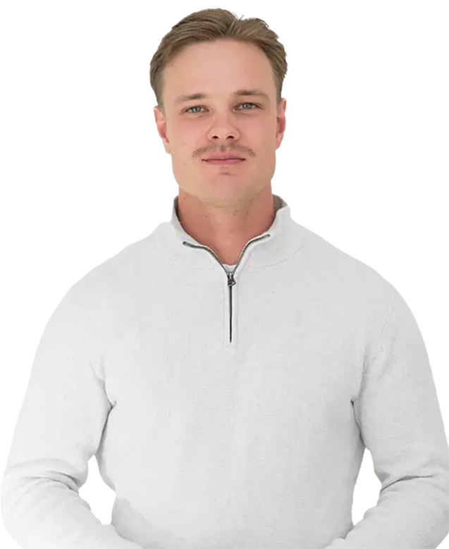
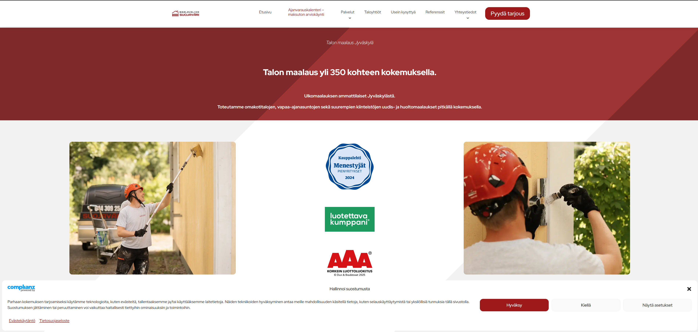
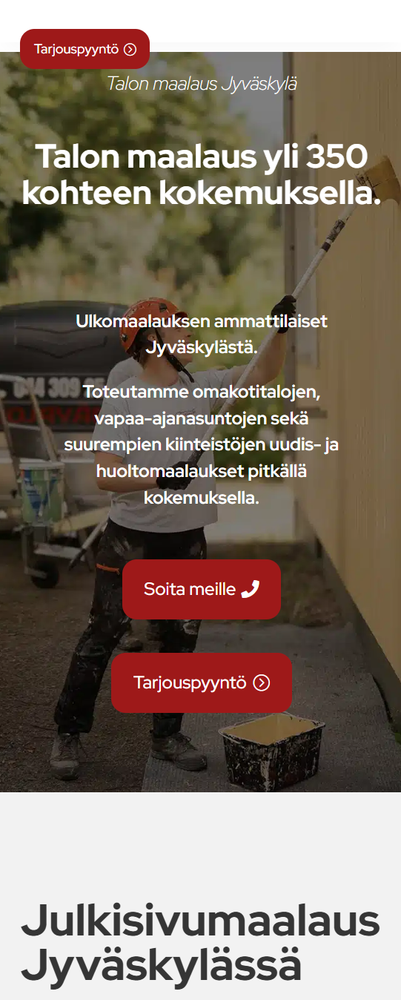
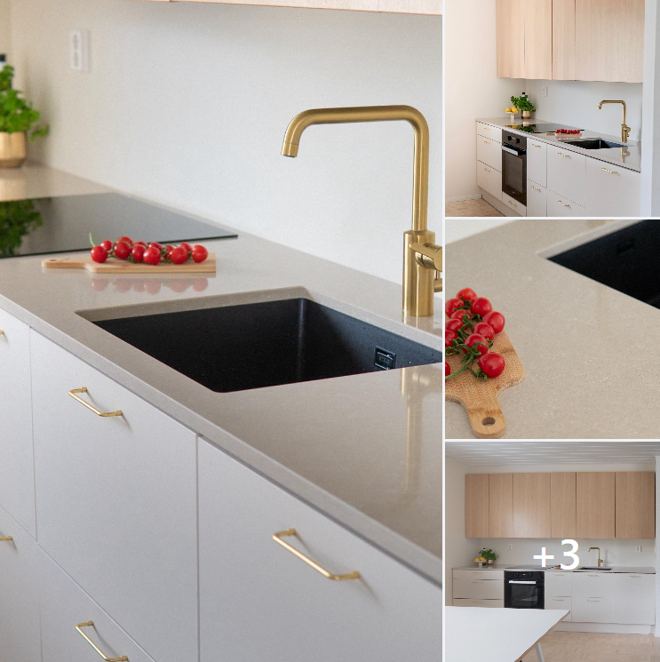
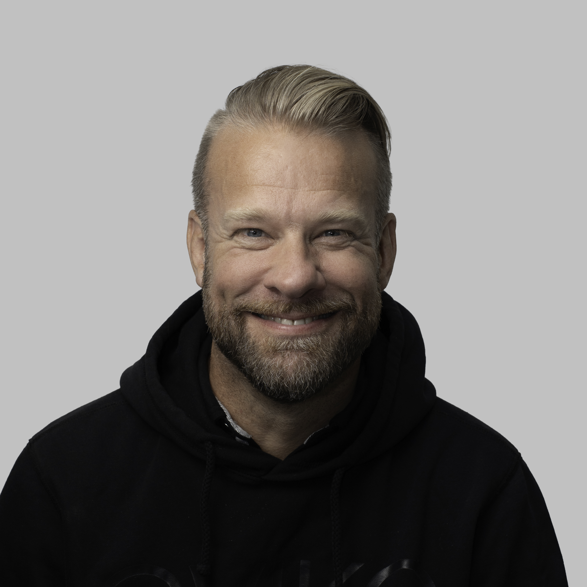
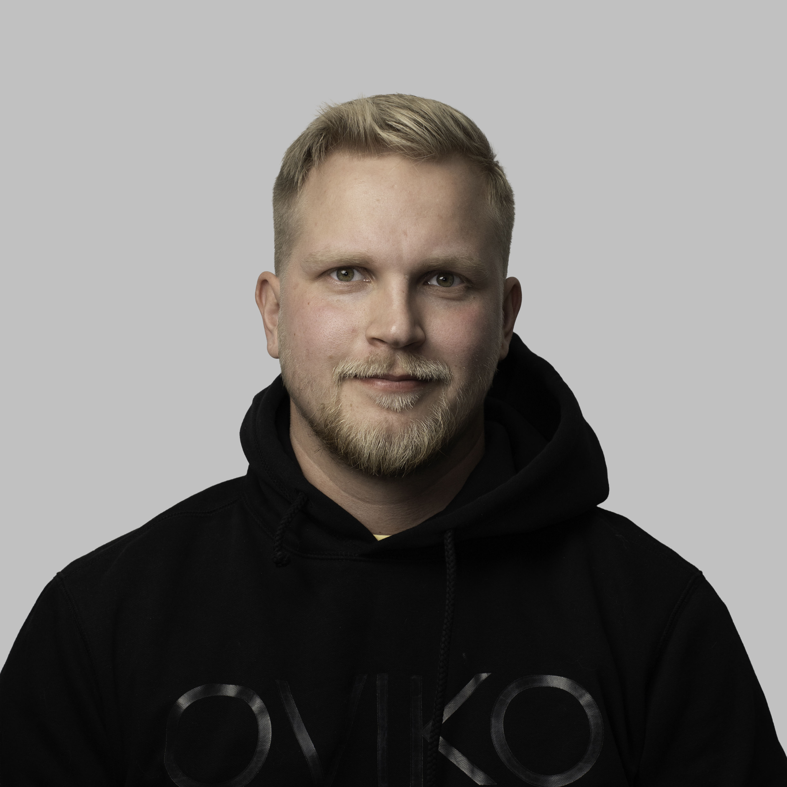
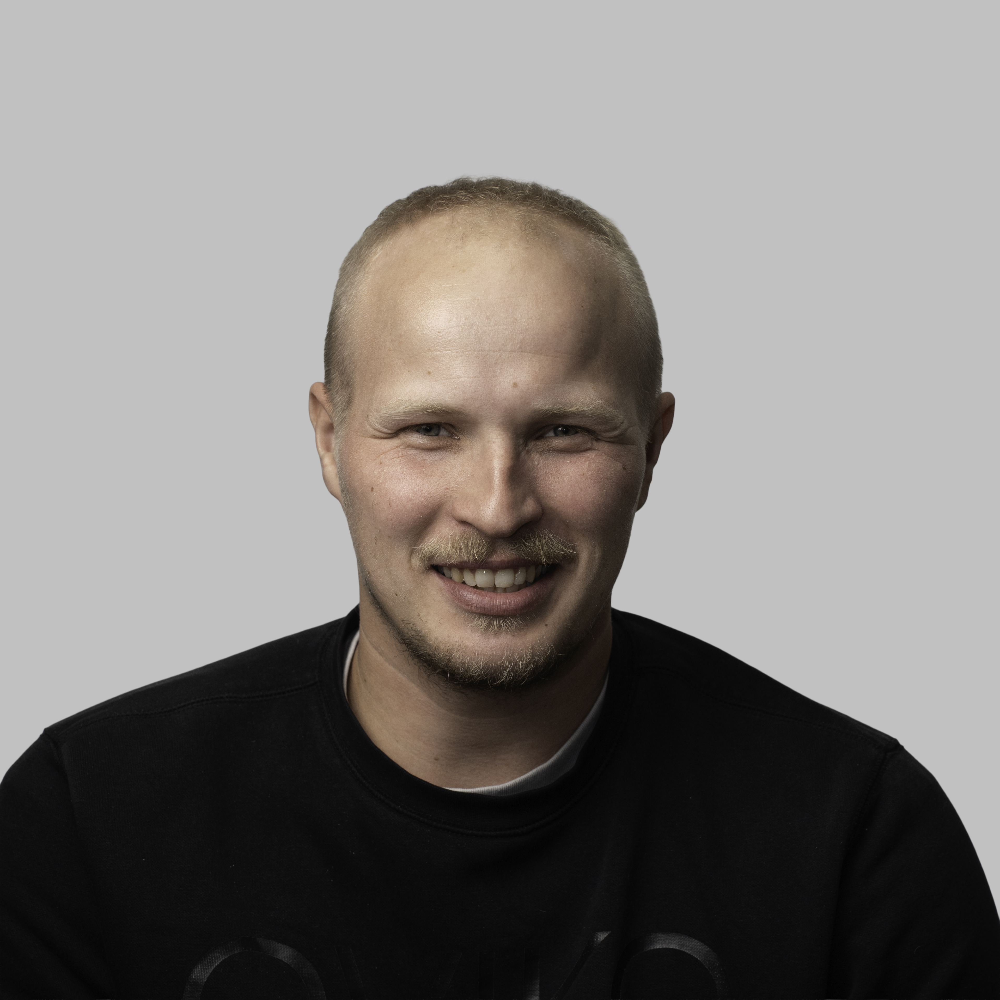
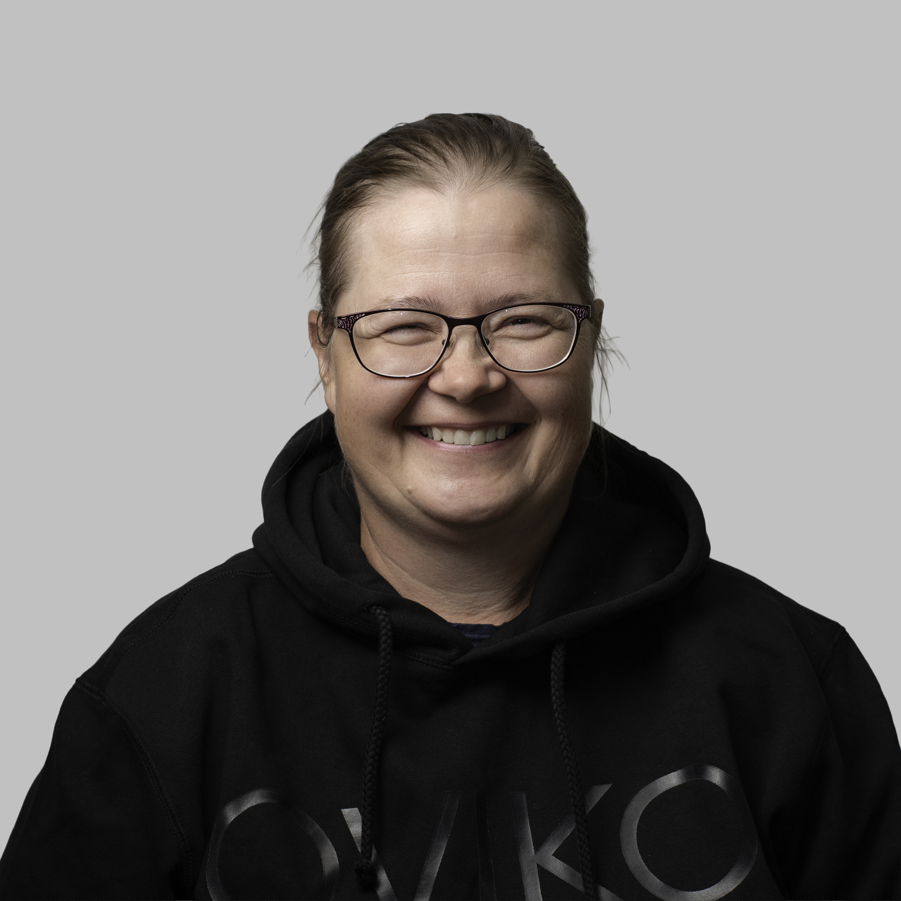
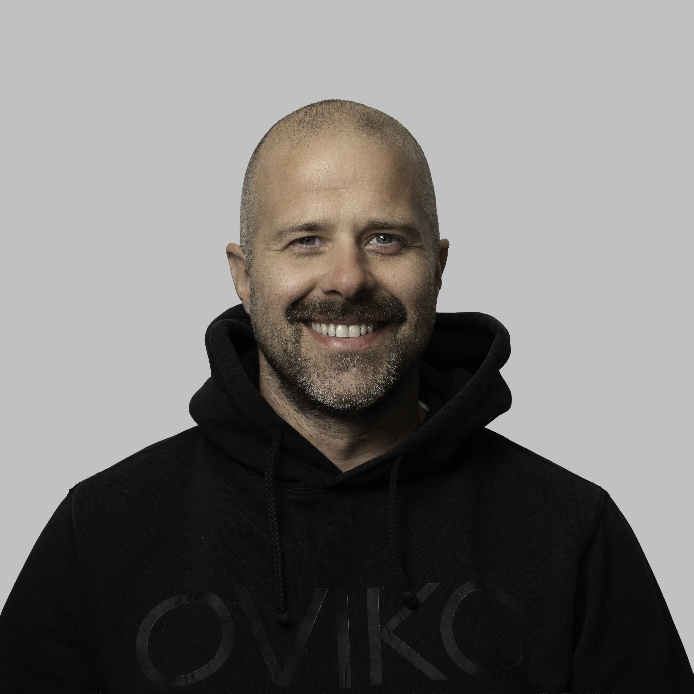

2024 — 2026
Freelancer
Self-employed · Central Finland
Social media management and content creation, WordPress development and façade painting projects alongside university studies and the master's thesis.

M.Sc. in Information Systems — digital services, data & design
I am interested in working with digital services, data and visual design. I enjoy optimizing and automating processes to make work easier and more efficient. I recently completed my master's degree and have experience running a business with nearly €300k in turnover.
I'm a 27-year-old recent graduate with an M.Sc. in Information Systems from the University of Jyväskylä, where my thesis examined how software developers experience generative AI tools. Before and during my studies, I founded and ran a house painting business that grew to 10+ seasonal employees and nearly €300k in turnover. That experience taught me project management, client acquisition, and leading a team from the ground up.
I combine that hands-on business background with technical skills and practical experience in web development, visual content editing and creation, alongside earlier experience in sales, customer service, and customer acquisition. I'm drawn to work at the intersection of digital services, data, and visual design - where technical thinking meets execution.
Outside of work, I spend time with family and friends, stay active through sports, love traveling, and enjoy photography and video editing when I get the chance.
AI-assisted development · WordPress · Website maintenance
Content creation · Graphic design · UX/UI design · Photoshop · Illustrator · Photography · Video editing
Project management · Client acquisition · Marketing · Team leadership · Sales
2024 — 2026
Self-employed · Central Finland
Social media management and content creation, WordPress development and façade painting projects alongside university studies and the master's thesis.
2017 — 2024
Suojaväri Oy — house painting & façade maintenance · Central Finland
Founded and grew a façade painting business, managing everything from client acquisition to project delivery. Left the business in good hands to focus on university studies.
10+ seasonal employees · ~€300k turnover in summer 2023
2020 — 2021
Fonum · Part-time
Sale of telephone subscriptions and phone maintenance.
2018 — 2020
Rakettitukku · Part-time
Responsible for the point of sale during the New Year's season.
2016 — 2017
Koreka Oy · Part-time
Arranged sales meetings by phone.
2012 — 2016
Sutiva Oy · Travaille Oy · Rakennustoimisto Kalevi Alonen Oy
Summer and part-time work as a house painter and construction worker.
2021 — 2026
University of Jyväskylä · Kauppatieteiden maisteri, pääaineena tietojärjestelmätiede
Information systems, data, digitalization, marketing and finance — see selected courses below.
Digital Systems Design, Development and Deployment (DS3D)
IT ja ihmisen käyttäytyminen
Kuluttajakäyttäytyminen digitalisoituvassa ympäristössä
Disruptive Technologies in Digital Business
Johdatus tiedusteluun
Digital Services and Innovation
Data ja sen hallinta
Digitalisaatio ja sen johtaminen
Tilinpäätös- ja verosuunnittelu
Kustannuslaskenta
Kirjanpito ja tuloslaskenta
Johdatus rahoitukseen
Suomen talous ja talouspolitiikka
Asiakassuhde- ja palvelujohtaminen
Kuluttajakäyttäytyminen
Digitaalinen markkinointi
Tilastomenetelmien peruskurssi
Tietokannat ja tiedonhallinta
Tuotekehitysprojekti
Uudet teknologiat yhteiskunnassa
Projektin hallinta
Palvelumuotoiluprojekti
Tietohallinnon perusteet
Ihmisen ja tietokoneen vuorovaikutus
Ohjelmointi 1
Johdatus algoritmiseen ajatteluun
IT-infrastruktuuri ja palveluiden hallinta
Kokonaisarkkitehtuuri käytännössä
Tietoverkot
Johdatus sovelluskehitykseen
Tietojärjestelmien kehittäminen
Yritysjärjestelmät ja niiden arkkitehtuurit
Liiketoimintaosaamisen perusteiden soveltaminen
Laskentatoimen perusteet
Markkinoinnin perusteet
Viestinnän johtamisen perusteet
Johtamisen ja johtajuuden perusteet
A few recent projects — swipe or use the arrows to browse.
Browser-based sales tool that helps kitchen renovation professionals present realistic visualizations of clients' existing kitchens using materials from the company catalog. Built with JavaScript, n8n workflows, and AI APIs for image generation and automation.

Built a functioning app in a few days for gym workforce management using AI-assisted development. The browser app helps gyms manage employee schedules and availability, with separate dashboards for planners on desktop and employees on mobile. Staff can submit monthly availability, while managers create weekly schedules and track staffing. It also includes automated reminders, schedule publishing workflows, and a clean interface for everyday business use.


WordPress websites built and optimized to rank highly in search results. Focused on SEO best practices and user experience.

Social media content creation and account management for business client. Photographing, editing and producing visual content and publishing it across social media platforms.
A glimpse at the photography, editing and visual content I create for work and personal projects.
Filming and editing video content for digital channels and client content.
Still images and edited visual work from personal and creative projects.






I'm currently open to new opportunities in digital services, data and development.
jasper.a.anttila@gmail.com